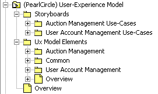
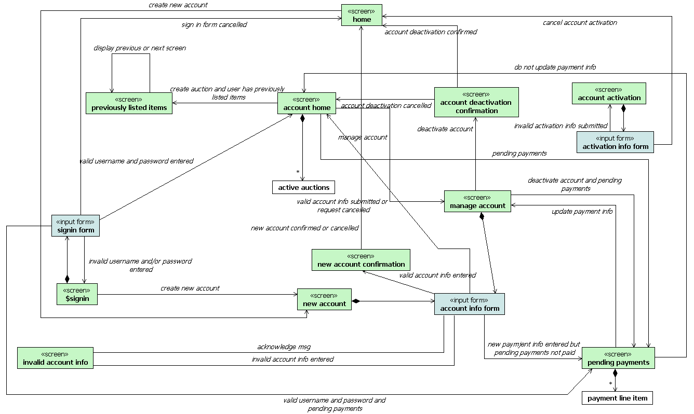
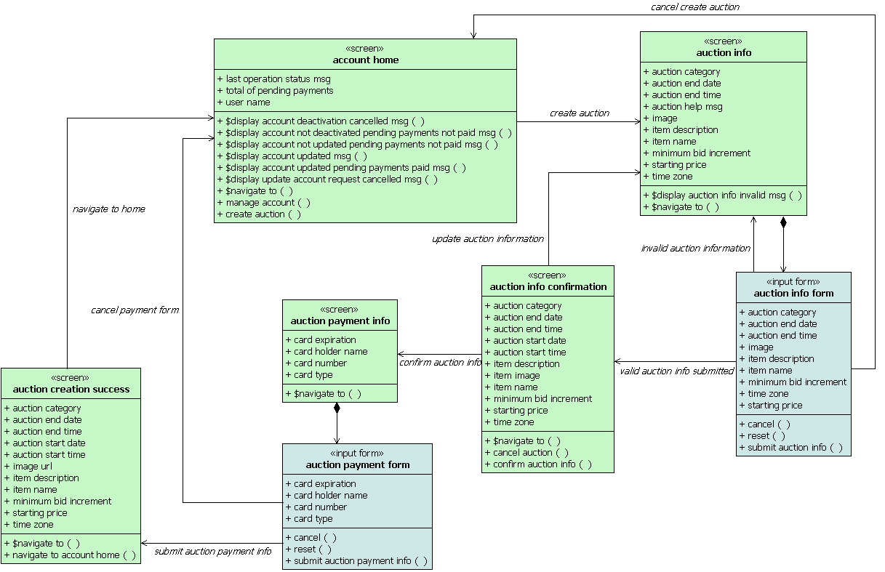
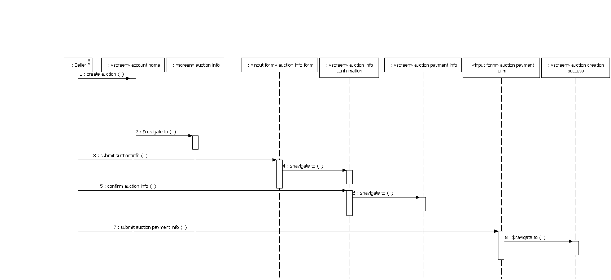

| Пример: User-Experience View |
 |
|
| Связанные элементы |
|---|
| Основное описание | This is an example of a User-Experience View section of a Software Architecture Document (SAD). It is from the SAD for the PearlCircle Online Auction application (PCOA), a reference application that is available from the developerWorks®: Rational® Web site. Just search for "PCOA". Table of ContentsUser-Experience ViewThis section describes the architecturally significant elements of the User-Experience Model. OverviewThe User-Experience Model captures a very important part of the PearlCircle specification. It captures the screens presented to the user and the transitions between screens resulting from user-generated events such as clicking on a link or a button on a form. Screen descriptions also contain descriptions of the dynamic content that the system must produce and display to the user. The User-Experience Model consists of:
The structure of the PearlCircle User-Experience Model is shown below:  Navigation MapA Navigation Map is a class diagram showing the navigation paths between selected User-Experience Elements (e.g., screens and input forms). The following diagram shows the User-Experience Elements and the navigation paths for the key User Account Management use-cases (the diagram can be found in User-Experience Model::Ux Model Elements::User Account Management package).  There can be multiple Navigation Map diagrams. In fact, for PearlCircle, a Navigation Map is defined for each of the business packages. The classes on the diagram represent (1) screens (stereotyped <<screen>>), (2) input forms (stereotyped <<input form>>) or (3) dynamic content bundles, whose content is displayed on the screens or in the input forms (no stereotype). The relationships between the <<screen>> classes represent navigation paths between the screens that are initiated by the user's actions. The user actions are represented by the operations on the screens. The dynamic content displayed on the screens is represented by the attributes on the screens. Architecturally Significant StoryboardsEach Use Case has its own "storyboard". A User-Experience Storyboard is a synthesis of the User-Experience Elements that participate in the realization of a Use Case. In other words, a User-Experience Storyboard shows system behavior from the User-Experience Model perspective. As an example, the following diagrams show the participants and the basic flow of the Create Auction User-Experience Storyboard (the User-Experience Storyboards for the remaining architecturally-significant Use Cases can be found in the User-Experience Model).  Note: User-Experience Storyboard participants diagrams can be considered "mini Navigation Maps" for the Use Case.  The basic flow of the above User-Experience Storyboard can be summarized as follows:
|
|---|
© Copyright IBM Corp. 1987, 2006. Все права защищены.. |